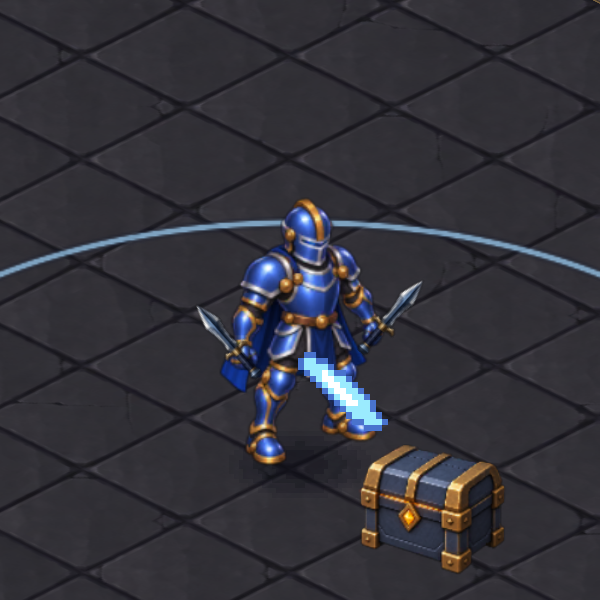
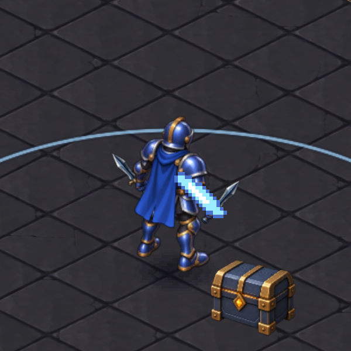
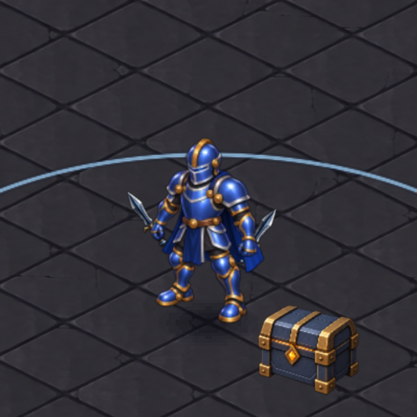
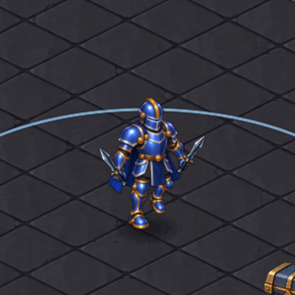

İlk kontrol bir tutuş sorunu gösterdi: mevcut saldırı hareketi, silahı sabit elden yukarı taşıyor. Alternatif örnekte kabza elde sabit, bıçak bilek çevresinde dönüyor. Bu bir karşılaştırma; oyunun çalışan animasyonu henüz değiştirilmedi.




Hançerler henüz telefona eklenmedi. Karelerdeki büyük piksel darbe efekti mevcut oyuna ait; bu çalışma onu değiştirmiyor.
Doğrulama ve teknik sınırlar